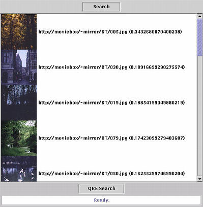

After query expansion, the system retrieves the images shown above. As should be clear from these results, automatic thesaurus construction is errorprone. This is why we need long-term learning to adapt the thesaurus using feedback across various query sessions. To get an idea of the possible improvements through learning, let's continue this session.
| Prev | Next |
 Home: DEMO - The Mirror MMDBMS architecture
Home: DEMO - The Mirror MMDBMS architecture
Last updated: December 9, 1999
Maintained by: arjen@acm.org